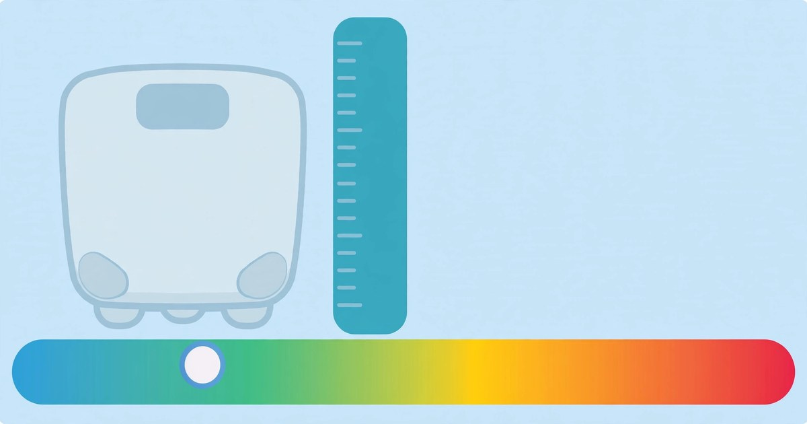

How to Check BMI Online
One number that puts your weight in context — your BMI, your healthy weight range and your category, in seconds.
October 16, 2026 · 6 min read

Your weight on its own does not tell you very much. Seventy kilograms is light for someone who is 1.90 metres tall and heavy for someone who is 1.50 metres. That is exactly the gap the Body Mass Index fills: it relates your weight to your height, so the result means the same thing for a tall person and a short one.
What BMI actually measures
BMI (Body Mass Index) is your weight in kilograms divided by the square of your height in metres:
BMI = weight (kg) ÷ height (m)²
The result falls into one of four widely used adult categories, based on the World Health Organization classification: underweight below 18.5, normal from 18.5 to 24.9, overweight from 25 to 29.9, and obese at 30 and above. These cut-offs apply to adults. They are a population-level screening guide, not a personal verdict: athletes with a lot of muscle, pregnant women, and growing children need different interpretation, and a doctor is the right person for that.
Check your BMI in 5 steps
- Open the BMI Calculator — it runs entirely in your browser, so the height and weight you enter are never uploaded anywhere.
- Enter your height. Use centimetres, or switch to feet and inches if that is how you know it. Measure without shoes, standing straight against a wall, for a figure you can trust.
- Enter your weight in kilograms. Weigh yourself on a flat, hard surface, ideally in the morning before eating, in light clothing. If your scale reads in pounds, convert first — 1 kilogram equals about 2.205 pounds.
- Click Calculate BMI. You get your BMI, your category on the coloured scale, and your healthy weight range: the range of weights that would put your BMI between 18.5 and 24.9 at your height.
- Read the range, not just the number. A single BMI is a snapshot. The healthy weight range is the more useful figure, because it tells you how far you are from the normal band and how much change would actually move you into it.
A worked example: 70 kg at 175 cm
Take a person who weighs 70 kg and is 175 cm tall. First convert the height to metres: 175 cm is 1.75 m. Square it: 1.75 × 1.75 = 3.0625. Then divide the weight by that number:
BMI = 70 ÷ 3.0625 = 22.9
That sits in the normal range (18.5–24.9). The healthy weight range for this height comes from the same formula in reverse. Multiply the category boundaries by height squared: 18.5 × 3.0625 = 56.7 kg, and 24.9 × 3.0625 = 76.3 kg. So at 175 cm, any weight from about 56.7 kg to 76.3 kg gives a normal BMI — a span of nearly 20 kg. That wide band is the point: BMI is a range to sit inside, not a single target weight to chase.
A second example shows the other side. Someone weighing 82 kg at 160 cm: height squared is 1.60 × 1.60 = 2.56, so BMI = 82 ÷ 2.56 = 32.0, in the obese category. The healthy range at 160 cm is 18.5 × 2.56 = 47.4 kg to 24.9 × 2.56 = 63.7 kg. To reach the top of the normal band, this person would need to lose 82 − 63.7 = 18.3 kg. Breaking a big goal into a smaller first milestone — say, reaching the overweight band below 30 — often makes the plan feel achievable: that first step means getting under 76.8 kg (30 × 2.56).
How BMI changes with weight at the same height (170 cm)
- 55 kg: BMI 19.0 — Normal. Near the lower end of the healthy band.
- 65 kg: BMI 22.5 — Normal. Comfortably mid-range.
- 75 kg: BMI 26.0 — Overweight. Just over the 25 boundary.
- 85 kg: BMI 29.4 — Overweight. Close to the obese threshold.
- 95 kg: BMI 32.9 — Obese. Well above the 30 boundary.
At 170 cm the healthy weight range is 53.5 kg to 72.0 kg (18.5 × 2.89 = 53.5; 24.9 × 2.89 = 72.0). Notice how the same 10 kg step matters more near a boundary than in the middle of a band: moving from 75 kg to 65 kg crosses from overweight into normal, while moving from 95 kg to 85 kg stays in a higher-risk band even though the effort is the same.
5 mistakes that make your BMI check wrong
- Mixing up units. The formula needs kilograms and metres. Entering your height in centimetres (175 instead of 1.75) or your weight in pounds without converting gives a nonsense result. If you measure in feet and inches, use the tool's ft+in mode or convert: 1 foot is 30.48 cm and 1 inch is 2.54 cm, so 5 ft 7 in is 170.2 cm.
- Guessing your height. Most people overestimate their height by a centimetre or two, which pushes the BMI down and flatters the result. Measure it properly once — barefoot, back against a wall — and use the real figure.
- Treating BMI as a body-fat reading. BMI cannot tell muscle from fat. A muscular athlete can score "overweight" with very little body fat, and an older adult can score "normal" while carrying too little muscle. If you train heavily, treat BMI as a rough guide and look at waist measurement and fitness too.
- Chasing a single decimal. Your weight shifts by a kilogram or two through the day with food, water and clothing, and that moves your BMI by a few tenths. Recheck weekly under the same conditions, watch the trend over months, and judge yourself against the range — not against yesterday's number.
Frequently asked questions
What is a good BMI?
For adults, the normal range is 18.5 to 24.9. Being inside that band is associated with the lowest health risk at population level, but it is not a guarantee of health and sitting slightly outside it is not a verdict — it is a prompt to look at diet, activity, and other measures such as waist size.
Is BMI accurate?
It is accurate as a screening tool and limited as a personal assessment. It correlates well with body fat across large groups, but it cannot distinguish muscle from fat and does not account for age, sex, or where fat is carried. Use it as a starting point, not the final word.
How often should I check my BMI?
Once a week at most, under the same conditions — morning, before eating, light clothing. Daily checks mostly measure water and food, not real change. The trend over several weeks is what matters.
Is my data safe in an online BMI calculator?
With ours, yes — everything runs locally in your browser, and the height and weight you enter are never uploaded to a server.
Related tools: BMI Calculator · Age Calculator · Unit Converter · Percentage Calculator